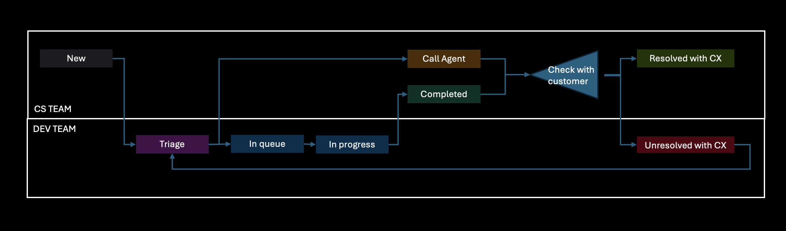

FAQs
Use this access point for the most common customer-facing answers, repeated troubleshooting steps, and standard guidance before escalating.
Quick handling tips, operational instructions, and a visual map for issue-state transitions.
Recommended path from intake through validation, including the main loops that typically happen in this workflow.

Use this access point for the most common customer-facing answers, repeated troubleshooting steps, and standard guidance before escalating.
All issues in Call Agent and Completed must be handled by Customer Service.
After they attend the case, they must change the status to Resolved with CX or Unresolved with CX.
Standardize what the team captures before sending an issue deeper into the queue.
Keep each status update clear enough that the next person can act without re-reading the whole thread.
Move tickets to the right end state with evidence, next action, or customer confirmation.
Use statuses as operational signals, not just labels. Each one should imply a specific next move.
The issue was received but has not been evaluated yet.
Initial review is in progress and ownership or category is being decided.
More information is required from the reporting side before meaningful work can continue.
The issue is accepted and waiting for engineering or operational execution.
Someone is actively testing, fixing, validating, or coordinating the solution.
Additional confirmation is pending after a fix, reply, or change was already provided.
The internal work is done and the expected action or recommendation was delivered.
The customer impact is confirmed as solved.
The customer still reports the issue or the expected outcome was not achieved.
Exact Tier 1 responses, required checks, and next actions for common CreditorX issue categories.
Ask the customer to provide more information about the flow where the error occurs.
This happens when the user does not have a mobile phone number registered in ForthCRM.
Use this when the customer does not know how to activate the CreditorX account with Forth data.
The customer cannot complete first login because an account already exists.
The related customer ID may not exist in the Forth database as entered.
Verify that the password matches the required security format.
If the customer uses a different mobile carrier, including an MVNO such as Cricket Wireless or Spectrum, help them select the corresponding host network carrier.
Complete the forwarding checklist with the customer before escalating.
Use this when carrier codes were not configured when the customer entered the platform.
The known test on iPhone 14 completed correctly, so collect device-specific information for accurate testing.
The username may be the email address, account ID, or phone number, depending on registration.
Use this when login fails because the customer forgot credentials.
Start with a clean reinstall and repeat the initial login process.
An unexpected logout can happen when the same session is opened on another device.